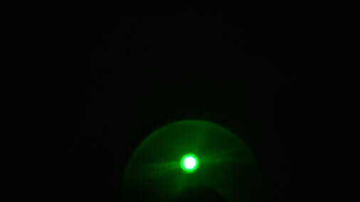
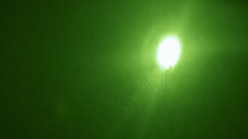
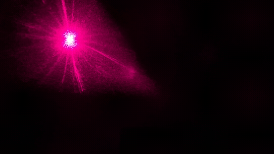
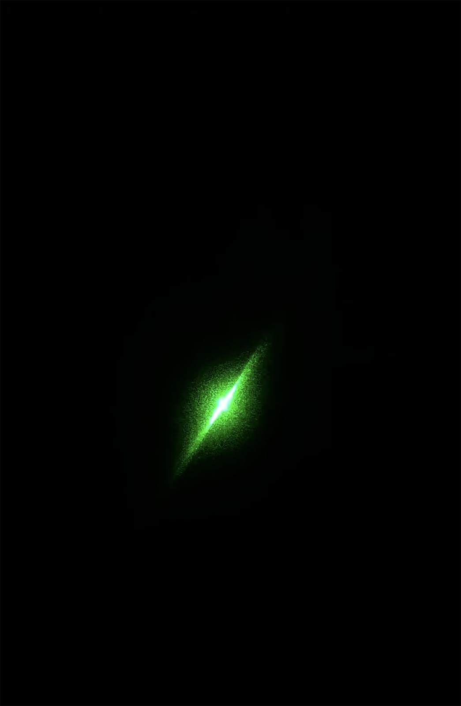
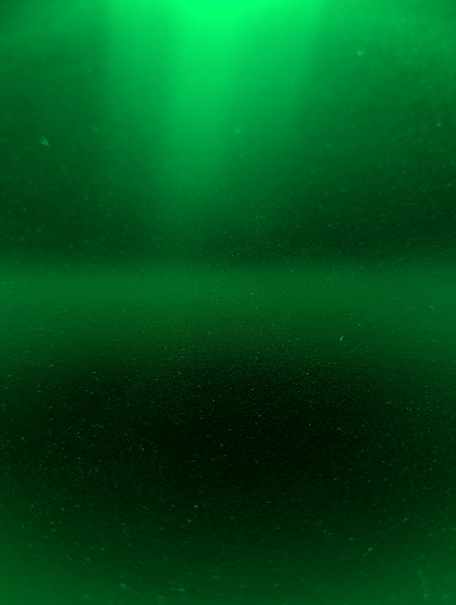
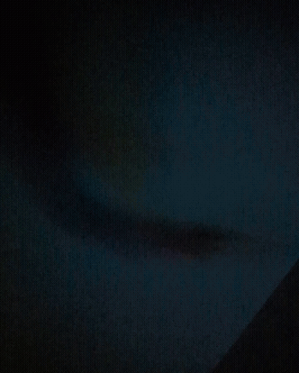
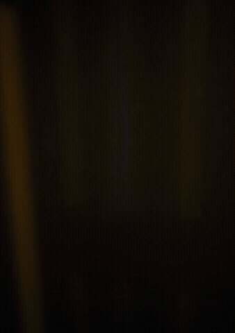
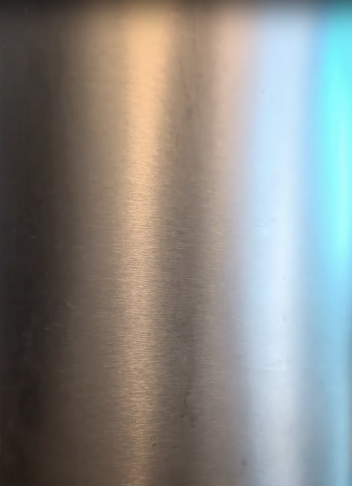
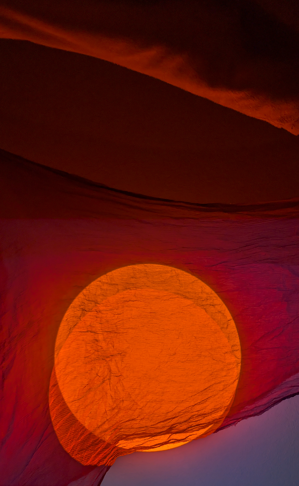
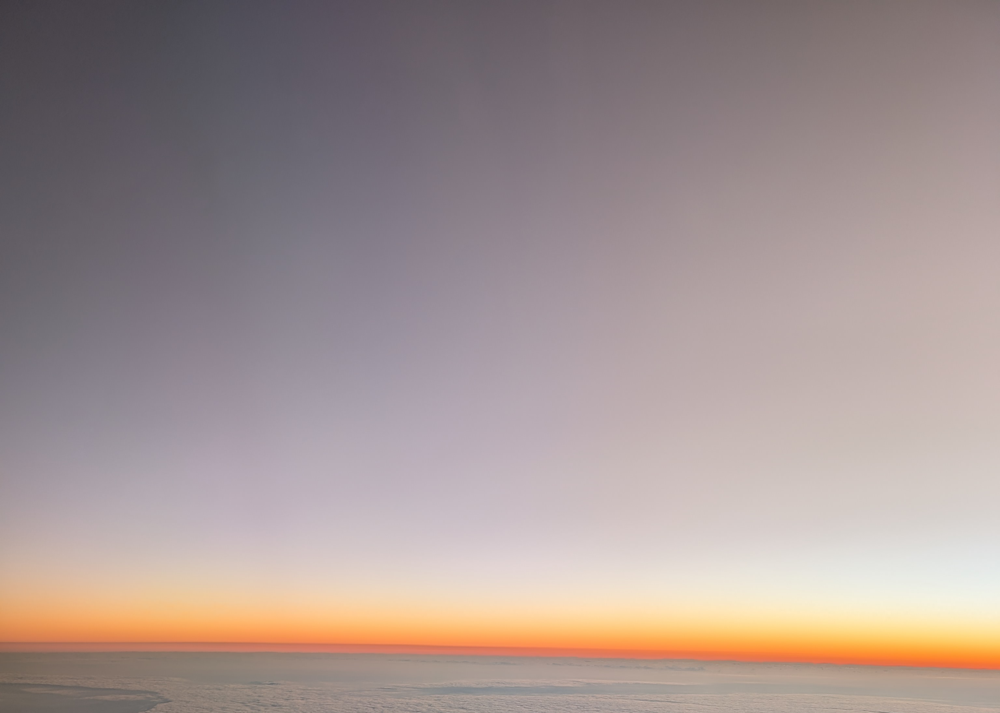

The perceptual loop that is self-sustaining. A loop that is a co-creation between one's own perception and the stimuli that feeds back that information.


Overall, luminance diminished gradually, and hue quickly became negligible unless a conscious effort is made to ascertain the color.
On the ride back, the wheels on the bus were clickity clanking, swaying everyone side to side. There was a squeezing, mechanical sound that rhythmically burst through the length of the bus. The voices were layered into a single hum, yet words could be deciphered here and there with enough focus, like changing the channel of a radio in a vast desertland where only the stars reflecting off the sand light the way back home. And many more sounds that churned and whistled, random crows fluttering by and the enthusiastic moans of the wind. And within it all, I could almost see silence.




Force software to calculate the decay of light over time.


In the finale, a rippled, deeply saturated blue ring flickers on and off completely to black. Within my own room, my entire space was flickering this color. The distinction between the blue ring being projected onto my wall broke beyond the confines of the square and filled my entire space with presence.


The irreducibility of perceptual experience – the sensation ≠ the act.

In closing my eyes, I used a clean finger to wiggle the edge, and sought out where the lichtchaos occurred and how. I did not see honeycombs or latticework, but flickers of light and squiggles; phosphenes triggered by external stimulation... It remains unknown... This intimate visual field of light.

Light apparently doesn't just illuminate matter, it also magnetically influences it. But how? Is there a prioritization with what is influenced? How is matter influenced?





